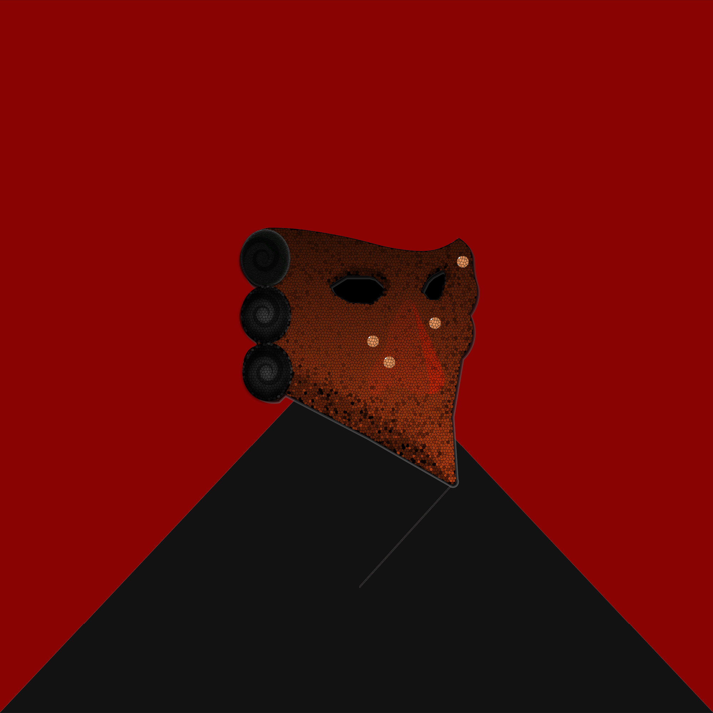

// VERIFY THE LEDGER
All 1,111 network nodes compiled and ready for deployment.

Erasing the individual to protect the Grand Ledger. 1,111 faceless validators quietly controlling the flow on Polygon.

NETWORK STATUS: OFFLINE (CONNECT WALLET)
SUPPLY MINTED: ? / 1111
ENTRY COST: YOUR_PRICE POL
In an era dominated by total algorithmic surveillance, the individual became the ultimate vulnerability. Identity was a vector for systemic control. From the ruins of this digital hegemony arose the Grand Ledger—a pure, immutable consensus engine.
The digital Bauta completely erases the user’s demographic footprint. To wear a Bauta Mask is to step out of the chaotic noise of personal identity and into the silent order of pure consensus. Each validator is a composite of structural components fused with the unyielding textures of their brutalist reality.
While all validators serve with equal authority, their composition determines their status. From the steadfast base layer of the Commons to the 11 Mythics—the Inner Circle holding pure gold-on-gold structures.
All 1,111 network nodes compiled and ready for deployment.
The Genesis Phase. Establishing the Grand Ledger’s footprint across the network. This includes the initialization of the primary X terminal, the release of the founding manifesto, and the slow opening of the closed coordination channels for early aligners.
The network goes live. 1,111 validators are officially minted and decentralized on the Polygon blockchain. Immutable IPFS pinning ensures the permanent erasure of the individual.
The order solidifies. Activation of the token-gated terminal, transforming the Bauta Mask from a digital identity into an access key. Implementation of fractional consensus voting.
The Grand Ledger’s true architecture is revealed. To detail the final phase now would introduce vulnerability to the network. Expect a fundamental shift.